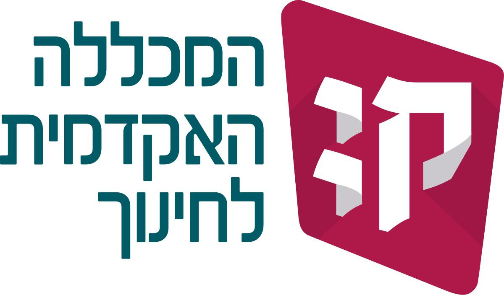
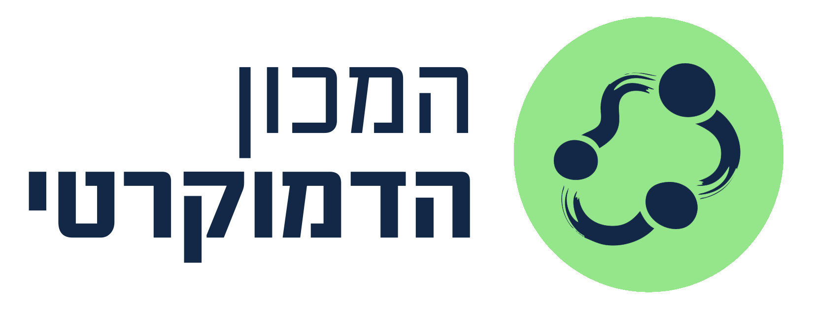
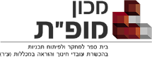

עידן שביט — GoblinAI
אני עוזר למורים, למוסדות חינוך ולקהילות להפוך את הבינה המלאכותית מגורם מאיים לכלי עבודה יומיומי — בהכשרות מעשיות, ייעוץ וליווי צמוד.
מעל 20 שנות ניסיון בחינוך, כיום במכללת קיי, במכון מופ״ת, במשרד החינוך ובקהילות בישראל ובבריטניה.
בשיתוף עם


מה זה GoblinAI?
שירותי הכשרה וייעוץ בבינה מלאכותית למורים, בתי ספר, מכללות וקהילות — בגישה מעשית, אנושית ומבוססת ניסיון אמיתי בכיתה.
הכשרה מעשית
סדנאות ולמידה מתמדת (השתלמויות) שמתמקדות ביישום אמיתי בכיתה ובמוסד.
חינוך מכיל
נגישות ללמידת בינה מלאכותית עבור כלל הקהילות וקבוצות הגיל.
שימוש אתי
יישום אחראי, תוך שמירה על פרטיות, ביטחון ולמידה ממוקדת אדם.
פרויקטים קיימים
כמה מהפרויקטים הפעילים ביותר כרגע.

הובלת קורס — מכון מופ״ת
הובלת הקורס "ללמוד וללמד בעידן הבינה המלאכותית" במכון מופ״ת.
ייפתח בנובמבר 2026הטמעת הבוט של מכללת קיי
שותפות בפרויקט הטמעת בוט הבינה המלאכותית החדש של המכללה.
המרכז לקידום הוראה — מכללת קיי
מוביל הטמעת שימוש בבינה מלאכותית בהוראה ובהכשרת מורים.
ייעוץ פדגוגי — המכון הדמוקרטי
ייעוץ בנושא פדגוגיה חינוכית דמוקרטית ובינה מלאכותית.
מיני האקתון חינוכי
בשיתוף מכללת בית ברל.
20.8.2026בדרך
פרויקטים נוספים בתהליכי גיבוש.
משלחת חילופי ידע — מכללת קיי ואוניברסיטת באקו
ניהול פדגוגי ומקצועי של משלחת חילופי ידע בנושאי בינה מלאכותית ומדיניות בינה מלאכותית באקדמיה.
מה אומרים עליי
"מרתק, מעשי ומדויק בול — הצוות יצא בהשראה אמיתית."
"עידן הפגין חזון ומומחיות יוצאי דופן בממשק שבין טכנולוגיה לחינוך. היכולת שלו לתרגם רעיונות מורכבים לפתרונות מעשיים וישימים בשטח חוללה שינוי משמעותי בתוכניות המחוזיות שלנו."
ערוץ היוטיוב
הדרכות, טיפים ותכנים על בינה מלאכותית בחינוך.